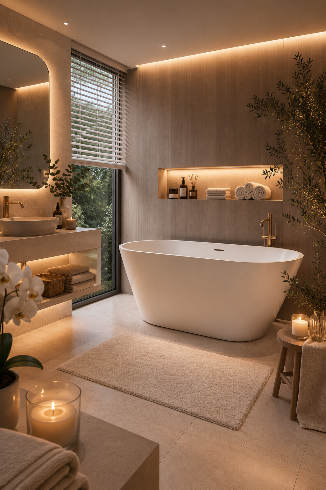

The Gold Hour Bathroom
Bathroom · Warm light, freestanding bath, complete quiet
Shop the look
Freestanding White Bath
The centrepiece of the room. A freestanding bath in pure white changes the whole atmosphere of a bathroom — it becomes something you arrange everything else around. The clean oval form works beautifully with warm stone tones and brushed gold hardware, and the deep sides make it genuinely comfortable to lie in.
View on Amazon →Faux White Orchid
A white orchid in the corner of a bathroom does something very particular — it makes the room feel alive and considered at the same time. These faux stems are convincingly beautiful, need nothing from you and never drop a petal on the floor. One is enough. Place it where the light catches it.
View on Amazon →Freestanding Bath Taps in Brushed Gold
Brushed gold taps are one of the most effective upgrades in a bathroom — they add warmth and intention without shouting about it. These floor-mounted freestanding taps are designed to pair with a freestanding bath and the finish is exactly right: warm enough to glow in low light, restrained enough to feel considered.
View on Amazon →Large Bathroom Mirror
A large mirror in a bathroom does two things: it opens the space and it doubles the light. In a warm, candlelit room like this one, a generous mirror reflects everything back softly and makes the whole room feel more expansive. Go bigger than feels necessary — you will not regret it.
View on Amazon →Countertop Basin
A countertop basin sits above the vanity surface rather than being sunk into it, which gives the whole area a more considered, design-led feel. The clean white ceramic and curved rim work with almost any palette — and paired with gold taps on a stone or wooden surface, it looks genuinely expensive for what it costs.
View on Amazon →Countertop Basin Taps in Gold
Matching your basin taps to your bath taps pulls a bathroom together more than almost anything else. These gold basin taps have a simple architectural shape that sits beautifully beside a white ceramic countertop bowl — and the brushed finish means they stay looking good without constant polishing.
View on Amazon →Buying Guide: How to Get the Gold Hour Bathroom Look
There is a particular quality of light in the early evening — warm, low and golden — that makes everything feel softer. This bathroom has been designed around exactly that feeling.
The freestanding bath sits centre stage, white and clean against warm stone walls. Brushed gold taps catch the light without demanding attention. LED strips run along the recessed shelf above, casting a glow across rolled towels, a reed diffuser and a small collection of things that have earned their place on the shelf.
This is not a cold bathroom. There is no harsh overhead light, no stark white tile, no clinical edge. Every decision has been made in the direction of warmth — the stone tones, the soft rug underfoot, the candles burning low on the floor, the orchid in the corner bringing something alive into the room without cluttering it.
The countertop basin sits on a floating vanity with open storage beneath — folded towels, a wicker basket, things left out because they are beautiful enough to stay. The large backlit mirror reflects the whole room back softly.
What makes this bathroom feel so restful is the layering. No single element does all the work. The lighting, the materials, the greenery and the carefully chosen hardware all contribute something small — and together they create a room that feels genuinely luxurious without feeling cold or untouchable.
It is the kind of bathroom that makes you want to run a bath on a Tuesday evening for no particular reason other than the room makes it feel worth doing.